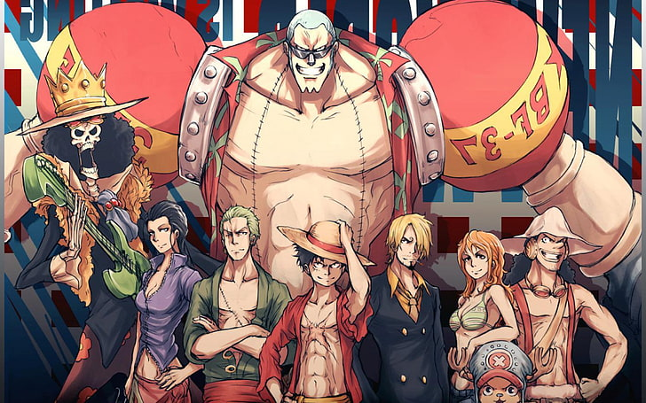
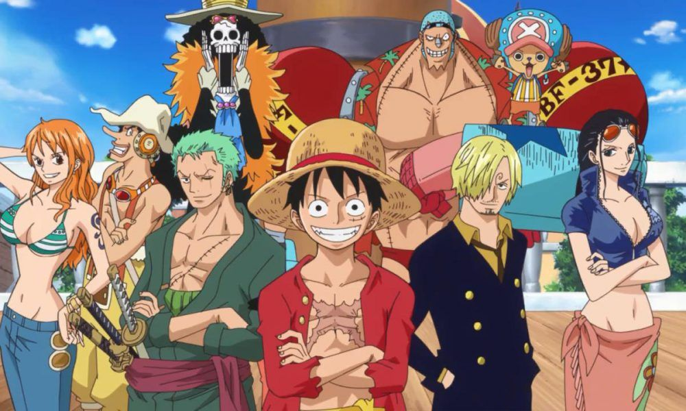
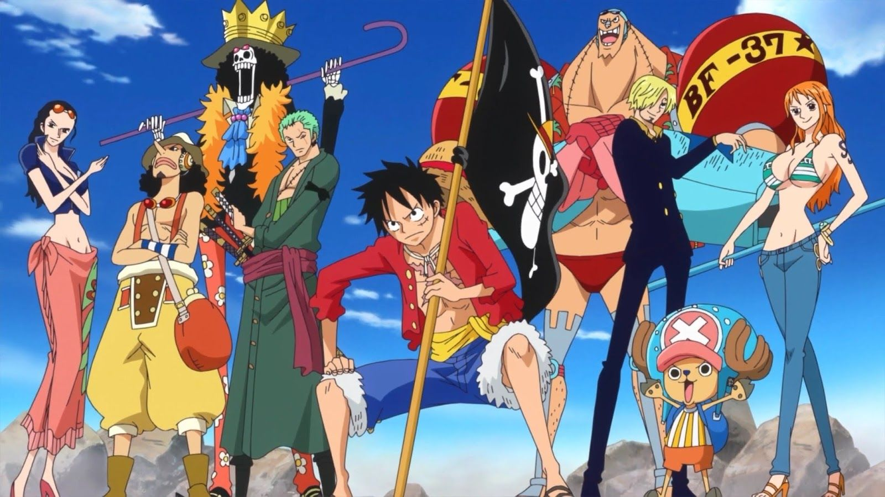

One Piece
One Piece es un manga escrito e ilustrado por Eiichirō Oda y además actualmente es el manga más comprado en el mundo. Comenzó a publicarse en la revista japonesa Weekly Shōnen Jump el 22 de julio de 1997 y a la fecha se han publicado 101
Quiero unirme al grupo